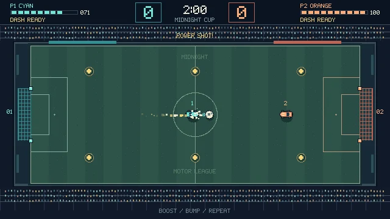
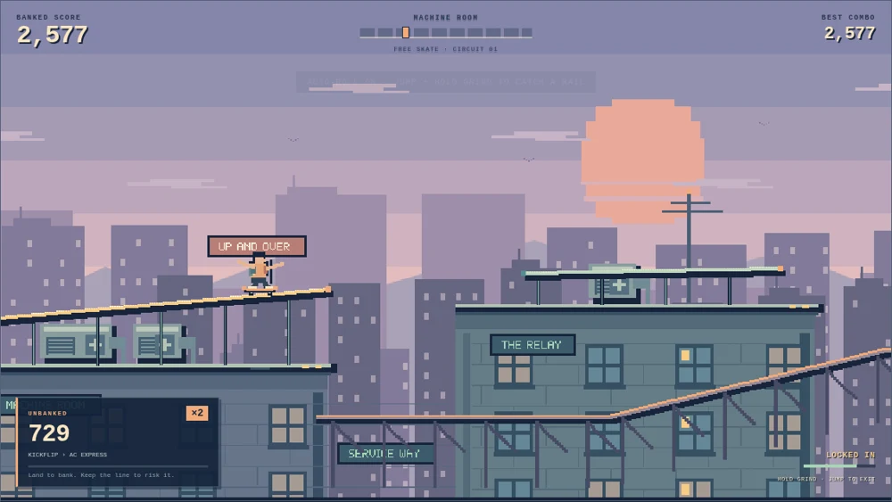
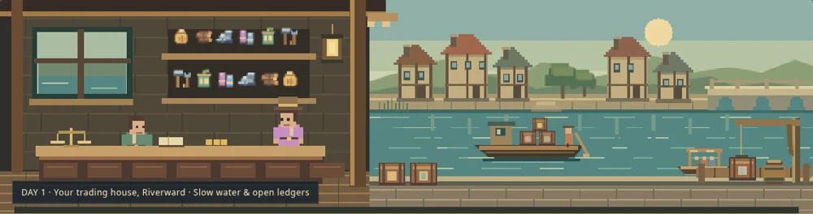
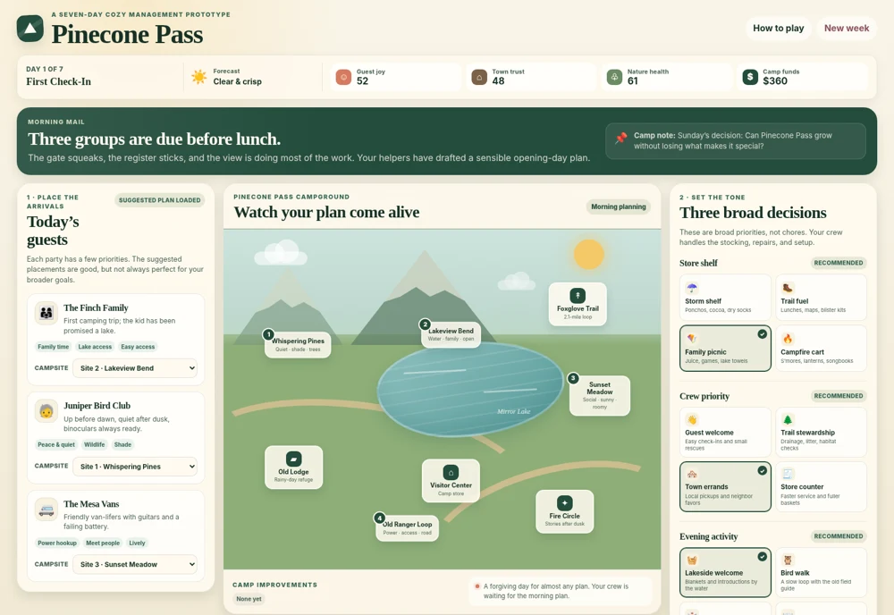

Pick your next
five minutes.
Small games. Straight to the good part.
01 / Gunship escortPLAY
v0.2 · Two missions
Night Relay
Hold the orbit. Bring them home.

02 / Car soccerPLAYv0.2 · Demolitions
Boostball 16
Boost, bump, score. Repeat.

03 / SkateboardingPLAYPlayable prototype
Roofline
Find your line. Keep the combo alive.
04 / Boss fightPLAY
Playable prototype
Pocket Behemoth
Read the tell. Dodge. Strike.
05 / Tiny-army RTSPLAY
Playable prototype
Crumb Command
Recruit a swarm. Claim the picnic.

06 / Merchant tradingPLAYPlayable prototype
Riverward Exchange
Work the river. Make your fortune.
07 / Trap defensePLAY
Playable prototype
Dreadworks
Build the dungeon. Stop the heroes.

08 / Cozy managementPLAYSeven-day prototype
Pinecone Pass
Seven days to shape your little retreat.
09 / Pirate sandboxPLAY
v0.1 · Pirate sandbox
Blackwater
Sail, trade, and write your pirate legend.
10 / Incremental farmingPLAY
First-field guide
Idle Farm
Plant your first field. Grow a little more.